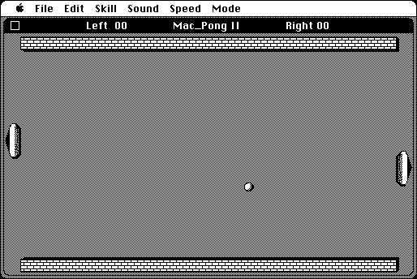

Download
PongII.zip (12K) Mac_Pong II v1.0 repackaged into a zipped hfs disk image and checksum file. The disk image can be mounted with Mini vMac.
PongII.sit (12K) Mac_Pong II v1.0 application in the original format.
copyright: David L. O’Connor
mod date: Dec 19, 1987
license: shareware
"based on the video game PONG". Source code is available - see below.
In Mini vMac, the emulated speed should be set to 1x for this game to be playable.

Source code :
PongII.src.zip (147K) Mac_Pong II source code repackaged into a zipped hfs disk image and checksum file. The disk image can be mounted with Mini vMac.
animation.zip (147K) Mac_Pong II source code application in the original format.
I've verified the project file “Mac_Pong IId” can be opened with Think C 7.0.4 and compiled. From email from the author about the source code :
Here's all the files I archived some 25 years ago. Feel free to share, but I can't really answer questions about the code. My intention was to build a general purpose sprite animation toolkit that could be used to make games etc. [...]
If you find these downloads useful, please consider helping the Gryphel Project, which hosts them.
Here are the md5 checksums for the downloads, signed with Gryphel Key 5:
--------- GRY SIGNED TEXT --------- a8ce09c9552052bab4839b60ce82e13a PongII.zip 6a2833abfb55c8f2a3bd74e68e535252 PongII.sit 66ee72777ef800e6a61fd78692453d69 PongII.src.zip 812c8f619c24eb209bebfa40e51854ac animation.zip ------- BEGIN GRY SIGNATURE ------- Gry/4Xa8CFcUzxdN/MW6zB/DDG5UxwutKdGBXlzPmH5I0j/+ZEvRasVadbJN2Z64 5jFUgQSSRqTsxr2pFLm3FcBP8E+Ny3979QSpKoLXVL8HCqu1QXXQUkVwj6iSMVmU ChYsBTRKWzIDj7BiqklVe92hnYWyxtKxXTOJ/lF5ctvxiNyCVWWGl2f6J/BeYiKV -------- END GRY SIGNATURE --------